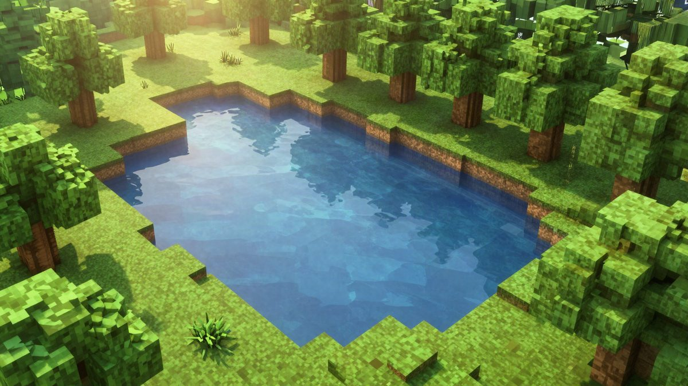

Nvidia RTX Remix 1.6 je dobio DLSS 5, a Minecraft Java Edition prvi put dobiva path tracing

Nvidia je objavila RTX Remix 1.6 s podrškom za DLSS 5 i eksperimentalnom podrškom za Minecraft Java Edition 1.21.1 s path tracingom. Na RTX 50 karticama dostupna je generacija više frameova (5x i 6x). Prema Nvidiji, AMD kartice dobivaju oko 20 posto veći učinak.
Nvidia je objavila RTX Remix 1.6, novu verziju svoje open-source platforme za obnovu starih igara. Update donosi DLSS 5, podršku za višestruku generaciju frameova na RTX 50 karticama i eksperimentalnu podršku za Minecraft Java Edition 1.21.1. Izvorni kod dostupan je na GitHubu, a verzija se isporučuje i kroz Nvidia app.
RTX Remix omogućuje modderima da starije igre obnove full path tracingom i PBR materijalima. Verzija 1.6 uvodi DLSS 5 s neuralnim renderiranjem koje, prema Nvidiji, koristi 3D smjernice. DLSS 5 uzima u obzir geometriju igre, teksture i podatke o osvjetljenju te ih dodatno obrađuje neuralnom mrežom. Nvidia tvrdi da se time poboljšavaju refleksije na površinama i ambijentalna okluzija. Cilj je da igre stare desetljećima izgledaju bliže modernim AAA naslovima.
Minecraft s path tracingom
Najneočekivaniji dio updatea je Minecraft. Nvidia je razvila novi rendering pipeline za Java Edition 1.21.1 temeljen na Fabric frameworku. On zamjenjuje dosadašnji pristup presretanja grafičkog sučelja. Igrači tako u svijetu od blokova dobivaju path tracing osvjetljenje, refleksije i globalnu iluminaciju.
Podrška je za sada u ranoj fazi testiranja. Nvidia upozorava da se u nekim složenijim okolinama i kombinacijama modova mogu pojaviti greške u prikazu.
RTX 50 i AMD
Za najnovije RTX 50 kartice Remix 1.6 otključava višestruku generaciju frameova s faktorom 5x i 6x. Time kartica u scenama s vrlo velikim opterećenjem, poput full path tracinga, može prikazati višestruko više frameova nego što ih stvarno renderira.
Optimizacije su dobili i vlasnici AMD kartica. Nvidia je promijenila zadanu logiku izvršavanja TraceRay poziva. Prema Nvidiji, uz najnoviji driver na Windowsu učinkovitost AMD kartica porasla je za oko 20 posto. U jednoj od scena frame rate je s 53 FPS narastao na 63 FPS.
Platforma je open-source, a može se preuzeti s GitHuba ili kroz Nvidia app.
Izvor: MyDrivers (快科技)
Povezani članci
 Nvidia driver 621.01 uvodi Microsoftov Advanced Shader Delivery za brže pokretanje igara21. listopada 2026.
Nvidia driver 621.01 uvodi Microsoftov Advanced Shader Delivery za brže pokretanje igara21. listopada 2026. GTA 6 navodno ima 6,08 milijuna digitalnih predbilježbi i oko 598 milijuna dolara prihoda20. listopada 2026.
GTA 6 navodno ima 6,08 milijuna digitalnih predbilježbi i oko 598 milijuna dolara prihoda20. listopada 2026. Microsoft: AI sustav dijagnosticira bolesti točnije od liječnika, ali samo na starim slučajevima22. listopada 2026.
Microsoft: AI sustav dijagnosticira bolesti točnije od liječnika, ali samo na starim slučajevima22. listopada 2026.